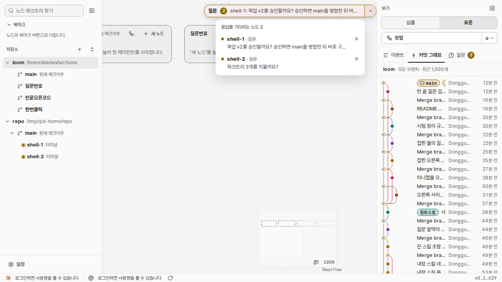
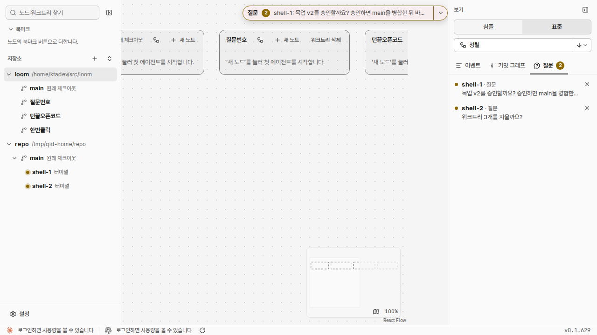

문서 ID: M25응답할 곳: 총괄 · loom 총괄연 담당: 코디 · 질문번호v3 · 2026-10-21
질문 번호, 질문 전문, 답변 입력
사람 지시: 「이제 목업이나 보고서 승인도 질문탭에 링크로 달아두는 식으루 구현하라, 직접 브라우저에 띄우지 말고」(v3). 「복사버튼이 뭘 복사하는지 직관적이지 않음, 질문과 관련된 색은 동일한 톤 사용 원칙 지켜」(v2). 처음 지시: 「질문이 터미널에 안 올라오기 때문에 질문 전문을 보기 편하게 만들 방안을 마련해야한다. 또한 질문에 id 부여하고 복사하기 편하게 만들어서 사용자가 에이전트에게 어떤 질문에 대한 답변을 하고 있는지 편하게 만들어줘」 「아니면 질문마다 답변 입력창을 두는 방안은?」 「복사버튼도 병행해서 진행」. 점선이 바뀌는 곳이다.
지금 시험 데몬 캡처, 질문 2개


- 목록과 「질문」 탭 모두 질문이 한 줄에서 잘린다. 질문에 번호가 없다.
① 알약과 열린 목록
응답을 기다리는 노드 3
- shell-1 · 질문목업 v2를 승인할까요? 승인하면 main을 병합한 뒤 바로 구현하고, 검사를 모두 마친 다음 main에 병합하고 원격에 올립니다. 수정이 필요하면 고칠 곳을 적어 주세요 (A: 승인 / B: 수정, 권장: A)M25질문 번호와 답변 입력 목업열기
- shell-2 · 질문워크트리 3개를 지울까요?
- Q14shell-3 · 승인 요청Bash: cargo clean
- 질문마다 번호 Q12가 붙는다. 데몬 전체에서 늘어나는 번호이고, 데몬을 다시 띄워도 그대로다. 알약은 지금처럼 한 줄이다.
- 목록에는 질문 전문이 줄바꿈되어 보인다.
- 질문이 「(A: … / B: …, 권장: A)」 꼴이면 선택지 버튼이 생긴다. 권장안은 주황 테두리다. 누르면 바로 보낸다.
- 질문에 문서(목업·보고서)가 붙어 있으면 [M25 … 열기 ↗] 링크가 생긴다. 누르면 새 탭에서 연다. 늘 최신 판을 연다.
- 입력창에 쓰고 Enter를 누르면 그 노드에 답이 간다. 질문은 바로 목록에서 사라진다.
- 번호 칩 [Q12 ⧉]가 복사 버튼이다. 누르면 「Q12: 」를 복사하고 칩이 잠깐 「✓ Q13: 복사됨」으로 바뀐다(Q13 줄). 터미널에 붙여 「Q12: A」처럼 답한다.
- 질문과 관련된 색(번호 칩, 권장 표시, 보내기 버튼, 복사됨, 점)은 모두 알약과 같은 주황 한 톤이다.
- Q14처럼 승인 창·폴더 신뢰·로그인은 터미널 화면에서만 답한다. 번호 칩은 복사하지 않고, 입력창 대신 [터미널에서 답하기]가 그 노드로 간다.
② 오른쪽 「질문」 탭
이벤트커밋 그래프질문 3
- shell-1 · 질문목업 v2를 승인할까요? 승인하면 main을 병합한 뒤 바로 구현하고, 검사를 모두 마친 다음 main에 병합하고 원격에 올립니다. 수정이 필요하면 고칠 곳을 적어 주세요 (A: 승인 / B: 수정, 권장: A)M25질문 번호와 답변 입력 목업열기
- shell-2 · 질문워크트리 3개를 지울까요?
- Q14shell-3 · 승인 요청Bash: cargo clean
- 목록과 같은 줄을 좁은 폭으로 보인다.
③ 노드 터미널
$ loom ask "목업 v2를 승인할까요? … (A: 승인 / B: 수정, 권장: A)" --doc docs/mockups/question-id.html
Q12 in the inbox with M25 (질문 번호와 답변 입력 목업): 목업 v2를 승인할까요? 승인하면 main을 병합한 뒤 바로 구현하고, 검사를 모두 마친 다음 main에 병합하고 원격에 올립니다. 수정이 필요하면 고칠 곳을 적어 주세요 (A: 승인 / B: 수정, 권장: A)
The question is in the human's inbox. End your turn now. The human answers in your terminal.
loom message #931 (from: human): answer to Q12 (목업 v2를 승인할까요? …): A
loom ask가 번호와 질문 전문을 터미널에 찍는다.--doc로 문서 하나를 질문에 붙인다.- 목업·보고서를 사람의 브라우저에 바로 띄우지 않는다.
loom show는 형식 점검과 문서 ID만 하고, 문서는 질문의 링크로만 연다. - 화면에서 보낸 답은 사람이 보낸 메시지로 노드에 간다. 노드가 일하는 중이면 턴이 끝난 뒤 받는다.
승인할 것
| 정할 것 | 권장 | 다른 안 |
|---|---|---|
| 선택지 버튼을 누르면 | 바로 보낸다(한 번 누름) | 입력창에 채우고 Enter로 보낸다(덧붙여 쓸 수 있다) |
| 목록 폭 | 440px(지금 380px, 입력창 때문에 넓힘) | 380px 그대로 |
| 승인 창 줄(Q14)의 번호 | 보인다(모든 대기에 번호) | loom ask 질문에만 번호 |